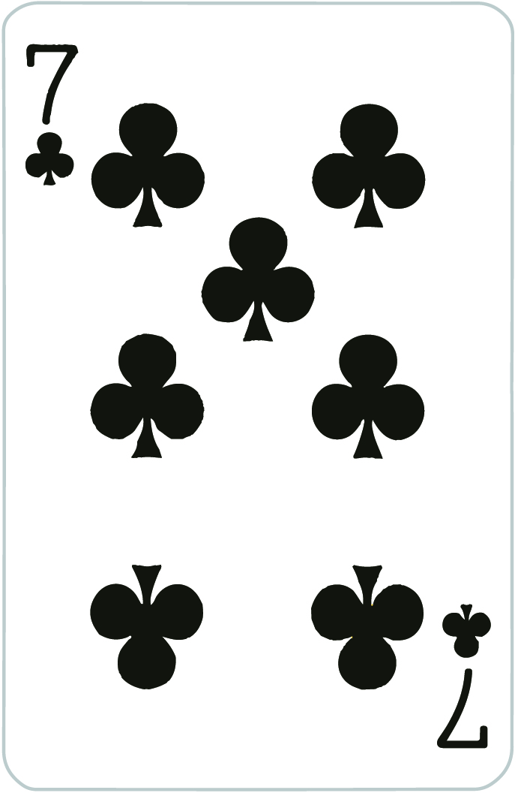
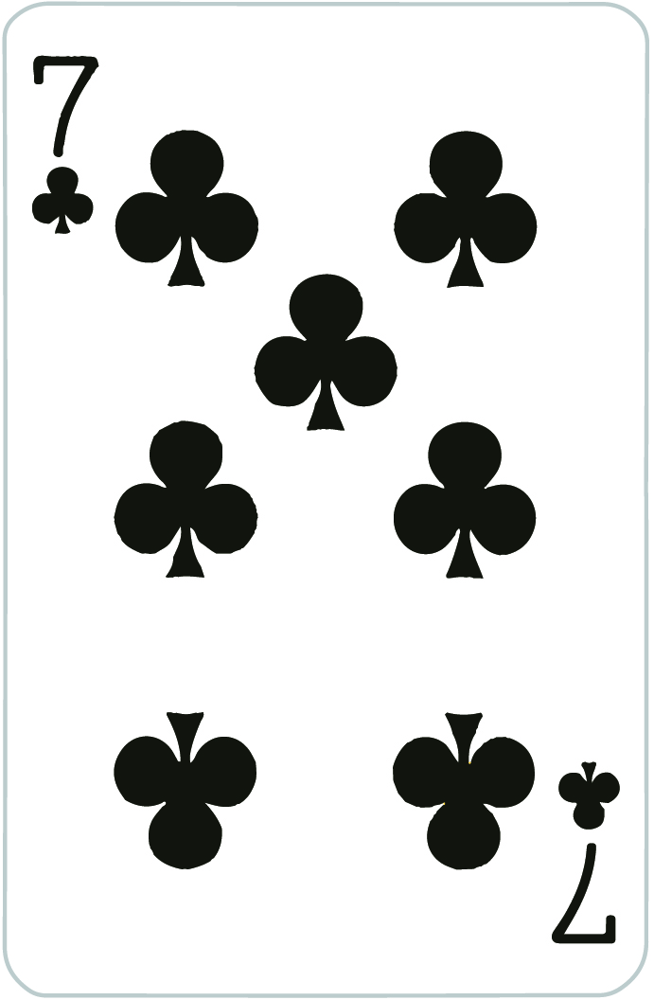

The rank in the game is a little bit different with common cards game rule in Western culture. The rank in decreasing order of the cards is as follow:
Two, called Pig (highest), Ace, King, Queen, Jack, Ten, Nine, Eight, Seven, Six, Five, Four, Three (lowest).
In addition to that, the card suit is also counted in the rank of cards. The rank in decreasing order of the card suit is as follow: Heart (highest), Diamond, Club, Spades (lowest)


The sever (the dealer) will give out 13 cards to each player. If the table has less than 4 players, each player still be given 13 cards. The maximum number of players in the game is 4 players and the minimum number of players in the game is 2 players.
The turn of each play will be set as follow: In the first game, the original schedule of each player will be chosen randomly. But for the second game, the first player played all of cards in the first game, the player will become the first player who starts the next game. The circle of schedule will be set based on the original schedule for example: We have 4 players Alice, Bob, Bill, Rose.
The server randomly set the original schedule to be: 1. Bill, 2. Rose, 3. Bob, 4. Alice
For the first game, the circle of turn will be Bill --> Rose --> Bob --> Alice --> Bill --> … and so on. Bill is the person who goes first. Assuming that after the first game, the rank of four players are: 1st Bob, 2nd Rose, 3rd Bill, 4th Alice. Then the circle of turn for the next game is: Bob --> Alice --> Bill --> Rose --> Bob --> … and so on. Because Bob is the first player played all his cards in the previous game. The turn schedule for new game will be circled by the rule described above.While the game is in process, when there is a player played all cards in his hand. The circle of turn for the current game will be reset right at that location, let’s take the example above:
The turn of the game is: 1. Bill, 2. Rose, 3. Bob, 4. Alice and the ranking of the first game is: 1st Bob, 2nd Rose, 3rd Bill, 4th Alice. When Bob just played all his cards, the circle of turn will be reset: 1. Alice, 2. Bill, 3. Rose. Because right next to Bob is Alice, so when Bob played all his cards then the turn schedule is renewed, and Alice can play whatever she likes.
When Rose just played all her cards, the circle of turn is reset against 1. Alice, 2. Bill. Because right next to Rose is Alice after Bob is out, so Alice can play whatever she likes once against. When Bill just played all his cards, the game restart and the game turn schedule is set to be Bob --> Alice --> Bill --> Rose --> Bob --> … and so on as mentioned above. That is everything to understand the turn of players in the game, now let’s discuss the valid play.
It could be any cards from 3 to pig


It just the combination of 2 cards have the same rank


It just the combination of 3 cards have the same rank


Sometimes the sequences can be called as straights. Sequence is a straight has the minimum length of 3 to maximum length of 12. However, card 2, a pig, is not allowed to use to combine any sequence. The pigs are only allowed to play as a single card, pair or triple and four of a kind

Here is a sample of a Four of a Kind of 3

Here is sample of a Double Sequence of 3,4,5

You can use them to play against 2 cards, which is the highest cards in the game.
If you catch 2 of Spades or 2 of Clubs, the punisher will receive 1 point, and the one who play these cards will be punished by 1 point.
If you catch 2 of Diamond or 2 of Heart, the punisher will receive 2 point, and the one who play these cards will be punished by 2 point.
The Double Sequence of 3 can be caught by Four of a Kind. However, Four of a Kind can be caught by Double Sequence of 4 such as:


 

two 2 cards can be punished by a Double Sequence of 4 or higher, three 2 cards can be pusnished by a Triple Sequence of 5 or higher (This case is extremely rare). The punishment of Double Sequence of 4, 5, 6 are counted respectively 4, 6 and 8 points. However, the game in the project does not allow who has previously passed, play Double Sequence of 4, 5 and 6 to punish others. The highest Double Sequence is 6, for example:.


To understand valid played, let’s come back to the turn example: 1. Bill, 2. Rose, 3. Bob, 4. Alice
First, every player must obey and follow the turn schedule, otherwise their play is considered as invalid play.
Second, if Bill firstly plays a single card ten of heart. Rose must play is a single card has higher ranking such as: jack of spades up to two of heart. If Rose play a pair, triple, etc, that will be considered as an invalid play. If Rose does not want to play, then she can pass her turn and she is locked out until someone makes a play that no one beats. Then the circle of turn will be reset right at that player’ location for example: Bill plays 10 of heart --> Rose passes --> Bob plays 2 of heart --> Alice passes --> (the circle is now left with Bill and Bob) Bill passes --> the circle of turn is reset and start: Bob --> Alice --> Bill --> Rose and Bob can play any valid plays he wishes to.
In case, Bill plays a sequence of 4 “3C, 4H, 5H, 6H”. A valid play such that Rose must play is a sequence of four has higher ranking such as: “8C, 9S, 10H, JS”. If Rose plays a pair, triple, etc, that will be considered as an invalid play.
The point given to each players is attributed as following rules:
There will be 2 points for the first player who play all cards.
The second one will receive 1 point and -1 point for the third one and -2 points for the last one.
For example there are 4 players and their rank after one game is in the order: Bob, Alice, John and Rose.
| Rank | Points |
|---|---|
| Bob | 2 |
| Alice | 1 |
| John | -1 |
| Rose | -2 |